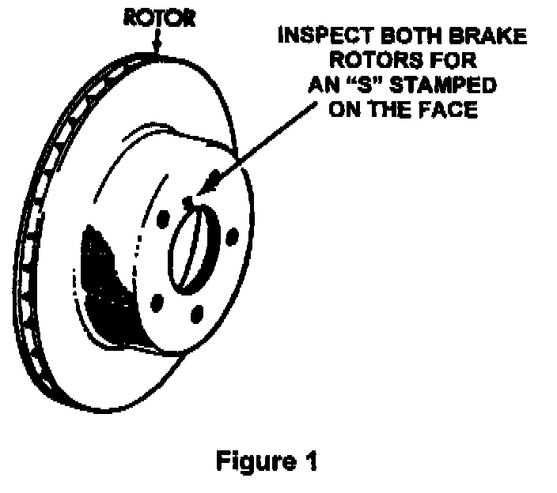
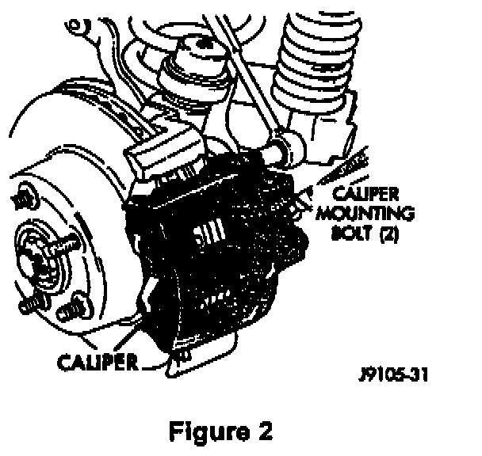
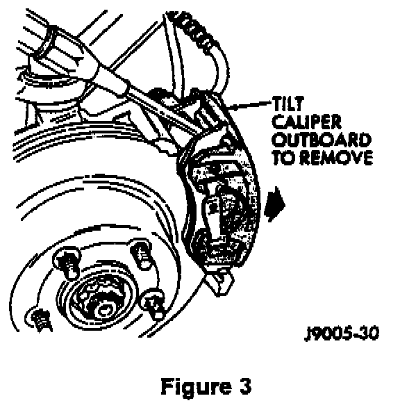
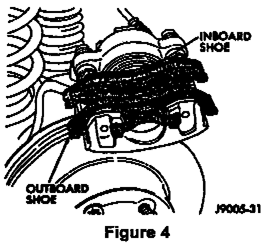
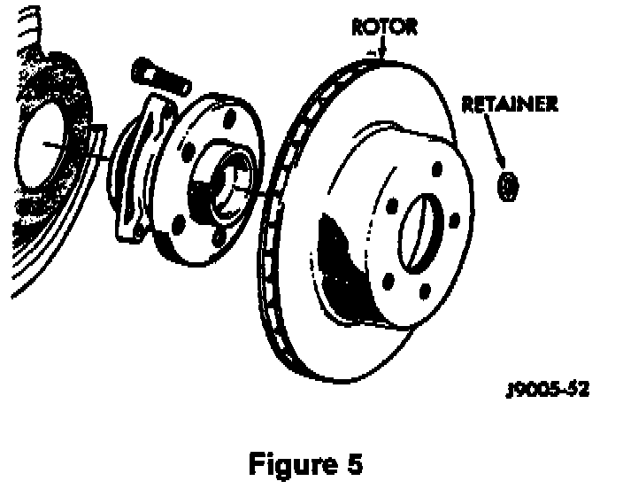
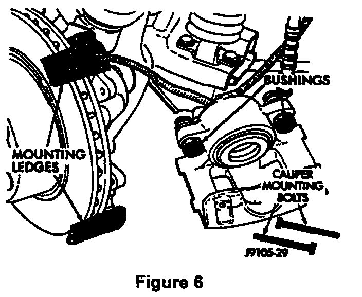

Service Procedure
1. Raise vehicle to working level on an appropriate hoist.2. Remove both front wheel and tire assemblies.

3. Inspect both front brake rotors carefully for the presence of an "S" stamped on the face of the hat section (the "S" is very lightly stamped in the rotor face and may be difficult to read) (Figure 1).
^ If there is an "S" stamped on both rotors, the rotors have already been replaced with stainless steel rotors and do not require replacement. Reinstall the front wheel and tire assemblies and return the vehicle to the owner. No further action is necessary.
^ If neither rotor or only one rotor has an "S" stamped on it, continue with Step 4 to replace the rotor(s) without an "S" stamp.

4. Remove the caliper mounting bolts (Figure 2).

5. Tilt the top of the caliper outward (Figure 3). Use a pry tool if necessary.

6. Set the caliper aside (Figure 4). Secure the caliper to the suspension with a wire.
CAUTION:
Do not allow the brake hose to support the weight of the caliper.

7. Remove the retainers that secure the brake rotor to the hub studs (Figure 5).
8. Remove and discard the brake rotor.
9. Clean the rotor hub and brake pad mounting ledges with a wire brush.
10. Remove the protective coating from the new rotor.
11. Install a new rotor on the hub.
NOTE:
It is NOT necessary to inspect the new rotor for the presence of an "S" on the rotor face.

12. Install the caliper assembly (Figure 6). Position the mounting notches at the lower end of the brake shoes on the bottom mounting ledge and then rotate the caliper over the rotor and seat the notches at the upper end of the shoes on the mounting ledge.
13. Install the caliper mounting bolts - and tighten to 132 in-lbs (15 Nm).
14. Repeat Steps 4-13 for the other front brake rotor (if necessary).
15. Install both front wheel and tire assemblies. Tighten the lug nuts to:
^ 75 ft-lbs (102 Nm) on XJ vehicles.
^ 88 ft-lbs (120 Nm) on ZJ vehicles.
16. Lower the vehicle.
17. Pump the brake pedal to seat the caliper piston(s).
18. Check the brake fluid level and adjust as necessary.
19. Road test the vehicle to verify proper brake operation.